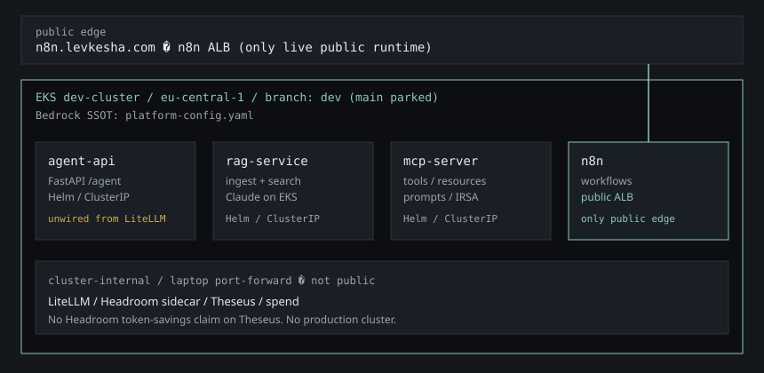

Architecture
Four services on EKS dev-cluster in eu-central-1. Bedrock IDs are owned by platform-config.yaml in LevKesha/ai-platform.

Topology
| Service | Role | Deploy | Edge |
|---|---|---|---|
| agent-api | FastAPI Bedrock /agent gateway. /agent unwired from LiteLLM. | Helm / EKS | ClusterIP |
| rag-service | Ingestion + semantic search + Claude on EKS. | Helm / EKS | ClusterIP |
| mcp-server | MCP tools, resources, prompts; IRSA. | Helm / EKS | ClusterIP |
| n8n | Workflow automation in ai-platform. Own host — n8n 2.25 has no supported reverse-proxy subpath. Login; screenshare demo. | Helm / EKS | Public ALB n8n.levkesha.com (opens in new tab) |
Not public
LiteLLM, Headroom sidecar, Theseus, and spend are ClusterIP / laptop port-forward. Do not treat them as public URLs. No production cluster. IaC branch dev is live; main is parked.